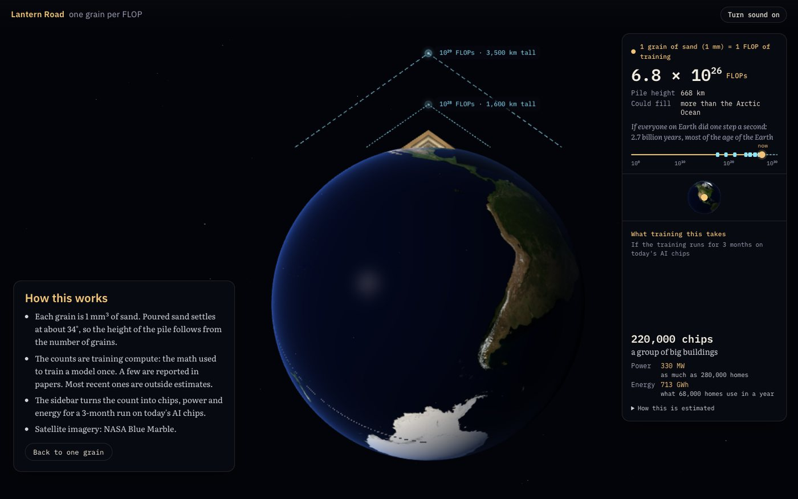

Lantern Road
One grain of sand for every FLOP of AI training, piled on the real Earth.
A FLOP is one small step of arithmetic: multiply two numbers, then add. It is the unit training compute is counted in, and the counts have grown past the point where the numbers mean anything on their own. Ten to the twenty-seventh is not a quantity anyone has an intuition for. It is a shape on a page.
So this gives each one a grain of sand and lets the pile do the arguing. Poured sand settles at about thirty-four degrees, which fixes the height of a pile once you know how many grains are in it. Scroll, and the count climbs: a thousand steps is a thimble; a trillion is a house; one second of a single AI chip is a twenty-five storey building. By the time you reach a frontier training run the pile has left the atmosphere, and the Earth it stands on has come into frame.
Along the way the piece marks the points where something became possible that was not possible before — seeing, attention, writing, in-context learning, reasoning step by step, following instructions, passing exams, thinking before answering, working unsupervised for hours. Each one is placed at the compute it took, with the paper it came from and a note on whether that number was reported or estimated. A sidebar converts the running count into chips, power and energy for a three-month run on today's hardware.

Open Lantern Road →Opens full-screen. It needs WebGL and a scroll wheel or trackpad; sound is off unless you turn it on.
How to read it
- Every grain is 1 mm³ of sand and one FLOP. The height of the pile follows from the count and nothing else.
- The counts are training compute — the arithmetic it took to train a model once. Not the experiments before it, and not the far larger total spent running the model afterwards.
- Some counts are reported in the papers. Most of the recent ones are outside estimates, and the piece says which is which.
- The chip, power and energy figures assume a three-month run at roughly 4 × 1014 useful FLOPs per second per chip and 1.5 kW including cooling. Train longer and you need fewer chips for the same energy.
Built on
- Satellite imagery: NASA Blue Marble.
- Doors, in order: Krizhevsky, Sutskever & Hinton (2012); Vaswani et al. (2017); Radford et al. (2019); Brown et al. (2020); Wei et al. (2022); Ouyang et al. (2022); OpenAI (2023, 2024); Kwa et al., METR (2025). Each is cited on its own card.
- Rendering: three.js.